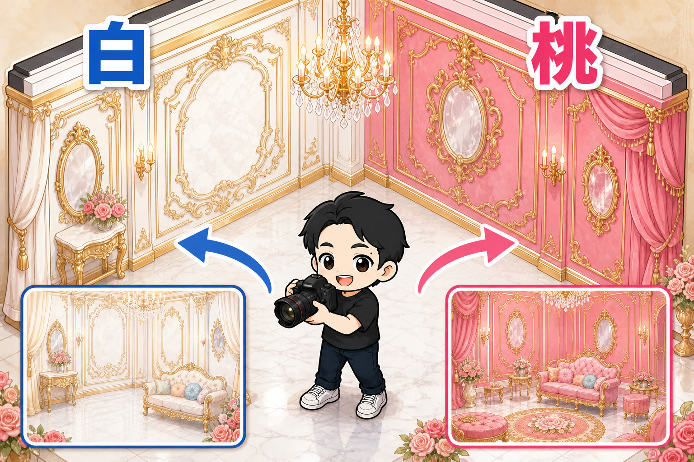
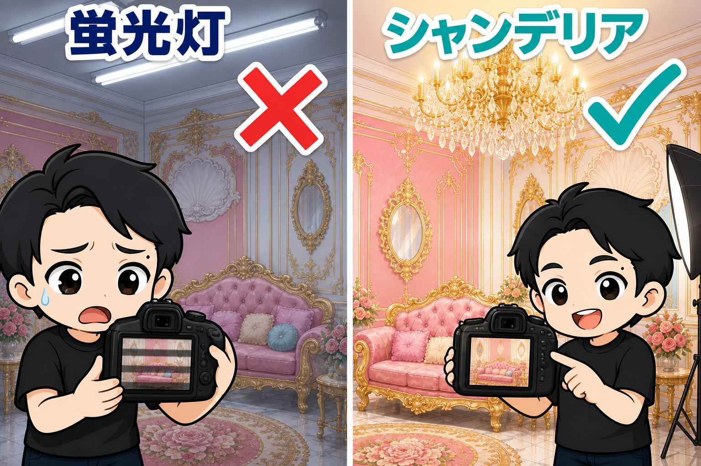
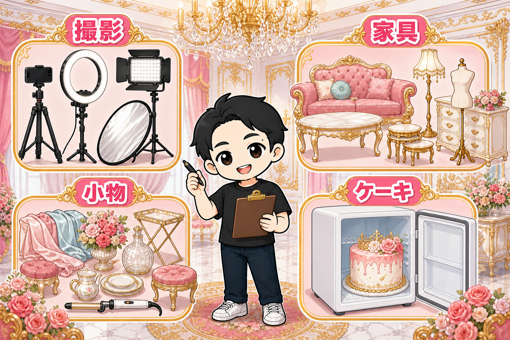

撮影スタジオづくりは、壁が9割です。
なぜなら、壁がそのまま「商品」になるから。
ぼくはいま撮影スタジオを4部屋やっています。
その部屋づくりを、ぜんぶ書きます。
壁は「背景」。2面以上あるのが理想

撮影スタジオの壁は、ただの壁ではありません。
写真の背景そのものです。
お客様は壁に向かってカメラを構えます。
だから色がすべて。
基本は白。
そして、できれば「白と黒」「白とピンク」「白と柄」のように、色違いの壁を2面作ってください。
画角を変えるだけで、2つのスタジオとして使えるようになります。
もうひとつ、壁に「モール」を貼るのもおすすめです。
額縁みたいな装飾材で、貼るだけで腰壁風・フレーム風になります。
海外のお屋敷みたいな背景が、数千円でできます。
壁紙の施工は業者さんへ。
ぼくは「家仲間コム」で業者さんを見つけて、相見積もりを取っています。
床は大理石調をDIY
床は、大理石っぽい柄のクッションフロアを貼ります。
これは自分でやってOK。
ネットで必要な量をオーダーして、YouTubeを見ながら両面テープで貼るだけです。
白い大理石調の床は、写真の「下半分」をきれいにしてくれます。
照明は、シャンデリア

天井には、シャンデリアを吊るします。
蛍光灯が付いているなら、撤去して引っ掛けシーリングに交換(ここは電気業者さんの仕事です)。
部屋が広ければ、シーリングは2〜3箇所。
そして撮影スタジオには、蛍光灯NGの決定的な理由があります。
フリッカーです。
蛍光灯は目に見えない速さで点滅しています。
動画や写真に、明るい縞と暗い縞が写り込む。
せっかくの撮影が、使い物にならなくなります。
家具は「コンセプト」で揃える
ぼくの生誕祭・推し活向けスタジオは、ロココ調がベースです。
- ロココ調のソファー
- ローテーブル
- ネストテーブル(3台重ねてしまえるやつ)
- ドレッサー
- フロアランプ(置き型シャンデリア)
- トルソー(衣装を着せて飾れる)
ポイントは、単品で選ばないこと。
「この世界観の部屋にする」と決めてから、それに合うものだけを入れます。
備品リスト

その他の必要な備品です。
これらをベースに、競合店舗をチェックして揃えていきましょう。
- スマホ三脚
- ビデオライト・大きめのLEDリングライト
- レフ板
- 撮影小物一式（造花、シャンパンボトル、布、など）
- スツール・折りたたみテーブル
- ケーキが入る冷蔵庫(生誕祭のお客様はケーキを持参されます)
- 食器・カトラリー・電気ケトル
- ヘアアイロン(コテ)
冷蔵庫が意外に思えるかもしれません。
でも「お祝いの主役はケーキ」なんです。
お客様が何をしに来るのかを想像すると、必要な備品は自然に決まります。
まとめ
- 壁が商品。白+もう1色の2面+モール装飾
- 床は大理石調クッションフロアをDIY
- 照明はシャンデリア。蛍光灯はフリッカーで全滅
- 家具は世界観で統一、備品は「お客様の1日」から逆算
目安として、撮影スタジオの初期費用は100万円前後。
ダンスより高めですが、そのぶん単価も取れるジャンルです。
あなたの街に、「撮りたくなる部屋」はもうありますか?
▼もう1つの副業、AI社員だけのeBay輸出店の実録🐹
https://note.com/cham_ebay
▼ブログ(レンスペ×eBay、全記事まとめ)
https://rental-space.net